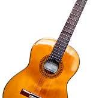

เครื่องดนตรีที่มีลักษณะคล้ายกีตาร์เป็นที่นิยมมากว่า 5,000 ปีเป็นอย่างต่ำ โดยเริ่มเป็นที่นิยมในแถบเอเชียกลาง เรียกว่าซิตารา (Sitara) เครื่องดนตรีที่มีรูปแบบคล้ายคลึงกีตาร์ที่เก่าแก่ที่สุดที่ค้นพบมีอายุ 3,300 ปี เป็นหินสลักของกวีอาณาจักรโบราณฮิตไตต์ คำว่ากีตาร์มาจากภาษาสเปนคำว่า guitarra ซึ่งมาจากภาษากรีกอีกทีคือคำว่า Kithara จากหลายแหล่งที่มาทำให้คำว่ากีตาร์น่าจะมีรากศัพท์มาจากภาษาตระกูลอินโดยูโรเปียน guit- คล้ายกับภาษาสันสกฤต ที่แปลว่า ดนตรี และ -tar หมายถึง คอร์ด หรือ สาย คำว่า qitara เป็นภาษาอาหรับ ใช้เรียก Lute lute ส่วนคำว่า guitarra เกิดขึ้นเมื่อเครื่องดนตรีชนิดนี้ถูกนำมาที่คาบสมุทรไอบีเรียโดย ชาวมัวร์ กีตาร์ในยุคปัจจุบัน มาจากเครื่องดนตรีที่เรียกว่า cithara ของชาวโรมัน ซึ่งนำเข้าไปแพร่หลายในอาณาจักรฮิสปาเนีย หรือสเปนโบราณ ประมาณ ค.ศ. 40 จากนั้นเปลี่ยนแปลงรูปแบบจนกลายมาเป็น เครื่องดนตรีที่มี 4 สายเรียกว่า อูด (oud) นำเข้ามาโดยชาวมัวร์ในยุคที่เข้ามาครอบครองคาบสมุทรไอบีเรีย ในศตวรรษที่ 8 ส่วนในยุโรปมีเครื่องดนตรีที่เรียกว่า ลุต (lute) ของชาวสแกนดิเนเวียมี 6 สาย ในสมัย ค.ศ. 800 เป็นเครื่องดนตรีที่ได้รับความนิยมในกลุ่มชาว (ไวกิง) |
|
|  | |